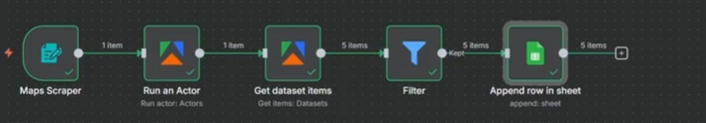

Workflow example 1
Editor run shownApify Maps to Google Sheets
A map-scraping flow obtains an Apify dataset, filters items and appends rows to a sheet.

Start
Maps Scraper and Apify actor
Transform
Get dataset items and Filter
Output
Append row in sheet
What the evidence shows: The editor capture shows green indicators through the append node and five output items. Deployment and repeat runs are not established.